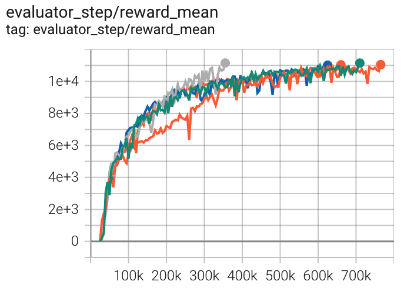
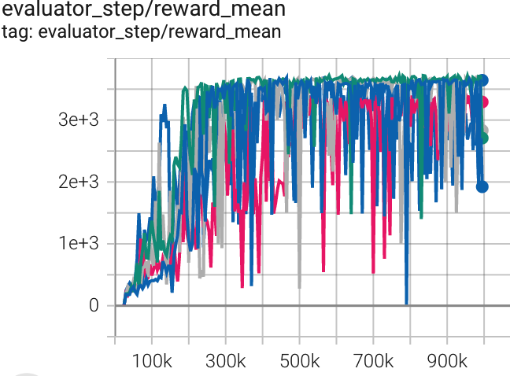
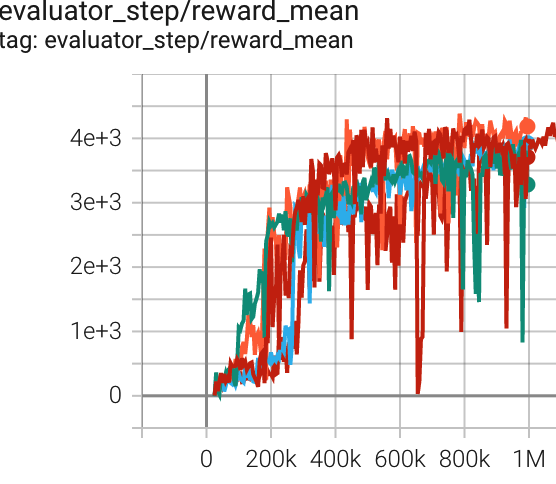

TD3¶
Overview¶
Twin Delayed DDPG (TD3), proposed in the 2018 paper Addressing Function Approximation Error in Actor-Critic Methods, is an algorithm which considers the interplay between function approximation error in both policy and value updates. TD3 is an actor-critic, model-free algorithm based on the deep deterministic policy gradient (DDPG) that can address overestimation bias, the accumulation of error in temporal difference methods and high sensitivity to hyper-parameters in continuous action spaces. Specifically, TD3 addresses the issue by introducing the following three critical tricks:
Clipped Double-Q Learning: When calculating the targets in the Bellman error loss functions, TD3 learns two Q-functions instead of one, and uses the smaller Q-value.
Delayed Policy Updates: TD3 updates the policy (and target networks) less frequently than the Q-function. In the paper, the author recommends one policy update for two Q-function updates. In our implementation, TD3 only updates the policy and target networks after a fixed number of updates \(d\) to the critic. We implement Policy Updates Delay through configuring
learn.actor_update_freq.Target Policy Smoothing: By smoothing out Q along changes in action, TD3 provides noise to the target action, making it more difficult for the policy to exploit Q-function faults.
Quick Facts¶
TD3 is only used for environments with continuous action spaces (e.g., MuJoCo).
TD3 is an off-policy algorithm.
TD3 is a model-free and actor-critic RL algorithm, which optimizes actor network and critic network respectively.
Key Equations or Key Graphs¶
TD3 proposes a clipped Double Q-learning variant which leverages the notion that a value estimate suffering from overestimation bias can be used as an approximate upper-bound to the true value estimate. TD3 shows that target networks, a common approach in deep Q-learning methods, are critical for variance reduction by reducing the accumulation of errors.
Firstly, to address the coupling of value and policy, TD3 proposes delaying policy updates until the value estimate is as small as possible. Therefore, TD3 only updates the policy and target networks after a fixed number of updates \(d\) to the critic.
We implement Policy Updates Delay through configuring learn.actor_update_freq.
Secondly, the target update of Clipped Double Q-learning algorithm is as follows:
In implementation, computational costs can be reduced by using a single actor optimized with respect to \(Q_{\theta_1}\) . We then use the same target \(y_2= y_1for Q_{\theta_2}\).
Finally, a concern with deterministic policies is they can overfit to narrow peaks in the value estimate. When updating the critic, a learning target using a deterministic policy is highly susceptible to inaccuracies induced by function approximation error, increasing the variance of the target. TD3 introduces a regularization strategy for deep value learning, target policy smoothing, which mimics the learning update from SARSA. Specifically, TD3 approximates this expectation over actions by adding a small amount of random noise to the target policy and averaging over mini-batches following:
we implement Target Policy Smoothing through configuring learn.noise, learn.noise_sigma, and learn.noise_range.
Pseudocode¶
{kind=link}
Extensions¶
TD3 is combined with:
Replay Buffers
DDPG/TD3
random_collect_sizeis set to 25000 by default, while it is 10000 for SAC. We only simply follow SpinningUp default setting and use random policy to collect initialization data. We configurerandom_collect_sizefor data collection.
Implementations¶
The default config is defined as follows:
- class ding.policy.td3.TD3Policy(cfg: dict, model: Optional[Union[type, torch.nn.modules.module.Module]] = None, enable_field: Optional[List[str]] = None)[source]¶
- Overview:
Policy class of TD3 algorithm.
Since DDPG and TD3 share many common things, we can easily derive this TD3 class from DDPG class by changing
_actor_update_freq,_twin_criticand noise in model wrapper.- Property:
learn_mode, collect_mode, eval_mode
Config:
ID
Symbol
Type
Default Value
Description
Other(Shape)
1
typestr
td3
RL policy register name, referto registryPOLICY_REGISTRYthis arg is optional,a placeholder2
cudabool
False
Whether to use cuda for network3
random_collect_sizeint
25000
Number of randomly collectedtraining samples in replaybuffer when training starts.Default to 25000 forDDPG/TD3, 10000 forsac.4
model.twin_criticbool
True
Whether to use two criticnetworks or only one.Default True for TD3,Clipped DoubleQ-learning method inTD3 paper.5
learn.learning_rate_actorfloat
1e-3
Learning rate for actornetwork(aka. policy).6
learn.learning_rate_criticfloat
1e-3
Learning rates for criticnetwork (aka. Q-network).7
learn.actor_update_freqint
2
When critic network updatesonce, how many times will actornetwork update.Default 2 for TD3, 1for DDPG. DelayedPolicy Updates methodin TD3 paper.8
learn.noisebool
True
Whether to add noise on targetnetwork’s action.Default True for TD3,False for DDPG.Target Policy Smoo-thing Regularizationin TD3 paper.9
learn.noise_rangedict
dict(min=-0.5,max=0.5,)Limit for range of targetpolicy smoothing noise,aka. noise_clip.10
learn.-ignore_donebool
False
Determine whether to ignoredone flag.Use ignore_done onlyin halfcheetah env.11
learn.-target_thetafloat
0.005
Used for soft update of thetarget network.aka. Interpolationfactor in polyak aver-aging for targetnetworks.12
collect.-noise_sigmafloat
0.1
Used for add noise during co-llection, through controllingthe sigma of distributionSample noise from dis-tribution, Ornstein-Uhlenbeck process inDDPG paper, Gaussianprocess in ours.
Model Here we provide examples of td3 model as default model for TD3.
- class ding.model.template.qac.QAC(obs_shape: Union[int, ding.utils.type_helper.SequenceType], action_shape: Union[int, ding.utils.type_helper.SequenceType, easydict.EasyDict], action_space: str, twin_critic: bool = False, actor_head_hidden_size: int = 64, actor_head_layer_num: int = 1, critic_head_hidden_size: int = 64, critic_head_layer_num: int = 1, activation: Optional[torch.nn.modules.module.Module] = ReLU(), norm_type: Optional[str] = None, encoder_hidden_size_list: Optional[ding.utils.type_helper.SequenceType] = [32, 64, 256], share_encoder: Optional[bool] = False)[source]
- Overview:
The QAC network, which is used in DDPG/TD3/SAC.
- Interfaces:
__init__,forward,compute_actor,compute_critic
- compute_actor(obs: torch.Tensor) Dict[str, Union[torch.Tensor, Dict[str, torch.Tensor]]][source]
- Overview:
The forward computation graph of compute_actor mode, uses observation tensor to produce actor output, such as
action,logitand so on.- Arguments:
obs (
torch.Tensor): Observation tensor data, now supports a batch of 1-dim vector data, i.e.(B, obs_shape).
- Returns:
outputs (
Dict[str, Union[torch.Tensor, Dict[str, torch.Tensor]]]): Actor output varying from action_space:regression,reparameterization,hybrid.
- ReturnsKeys (either):
- regression action_space
action (
torch.Tensor): Continuous action with same size asaction_shape, usually in DDPG.
- reparameterization action_space
logit (
Dict[str, torch.Tensor]): Reparameterization logit, usually in SAC.mu (
torch.Tensor): Mean of parameterization gaussion distribution.sigma (
torch.Tensor): Standard variation of parameterization gaussion distribution.
- hybrid action_space
logit (
torch.Tensor): Discrete action type logit.action_args (
torch.Tensor): Continuous action arguments.
- Shapes:
obs (
torch.Tensor): \((B, N0)\), B is batch size and N0 corresponds toobs_shape.action (
torch.Tensor): \((B, N1)\), B is batch size and N1 corresponds toaction_shape.logit.mu (
torch.Tensor): \((B, N1)\), B is batch size and N1 corresponds toaction_shape.logit.sigma (
torch.Tensor): \((B, N1)\), B is batch size.logit (
torch.Tensor): \((B, N2)\), B is batch size and N2 corresponds toaction_shape.action_type_shape.action_args (
torch.Tensor): \((B, N3)\), B is batch size and N3 corresponds toaction_shape.action_args_shape.
- Examples:
>>> # Regression mode >>> model = QAC(64, 64, 'regression') >>> obs = torch.randn(4, 64) >>> actor_outputs = model(obs,'compute_actor') >>> assert actor_outputs['action'].shape == torch.Size([4, 64]) >>> # Reparameterization Mode >>> model = QAC(64, 64, 'reparameterization') >>> obs = torch.randn(4, 64) >>> actor_outputs = model(obs,'compute_actor') >>> assert actor_outputs['logit'][0].shape == torch.Size([4, 64]) # mu >>> actor_outputs['logit'][1].shape == torch.Size([4, 64]) # sigma
- compute_critic(inputs: Dict[str, torch.Tensor]) Dict[str, torch.Tensor][source]
- Overview:
The forward computation graph of compute_critic mode, uses observation and action tensor to produce critic output, such as
q_value.- Arguments:
inputs (
Dict[str, torch.Tensor]): Dict strcture of input data, includingobsandactiontensor, also containslogittensor in hybrid action_space.
- Returns:
outputs (
Dict[str, torch.Tensor]): Critic output, such asq_value.
- ArgumentsKeys:
obs: (
torch.Tensor): Observation tensor data, now supports a batch of 1-dim vector data.action (
Union[torch.Tensor, Dict]): Continuous action with same size asaction_shape.logit (
torch.Tensor): Discrete action logit, only in hybrid action_space.action_args (
torch.Tensor): Continuous action arguments, only in hybrid action_space.
- ReturnKeys:
q_value (
torch.Tensor): Q value tensor with same size as batch size.
- Shapes:
obs (
torch.Tensor): \((B, N1)\), where B is batch size and N1 isobs_shape.logit (
torch.Tensor): \((B, N2)\), B is batch size and N2 corresponds toaction_shape.action_type_shape.action_args (
torch.Tensor): \((B, N3)\), B is batch size and N3 corresponds toaction_shape.action_args_shape.action (
torch.Tensor): \((B, N4)\), where B is batch size and N4 isaction_shape.q_value (
torch.Tensor): \((B, )\), where B is batch size.
- Examples:
>>> inputs = {'obs': torch.randn(4, 8), 'action': torch.randn(4, 1)} >>> model = QAC(obs_shape=(8, ),action_shape=1, action_space='regression') >>> model(inputs, mode='compute_critic')['q_value'] # q value ... tensor([0.0773, 0.1639, 0.0917, 0.0370], grad_fn=<SqueezeBackward1>)
- forward(inputs: Union[torch.Tensor, Dict[str, torch.Tensor]], mode: str) Dict[str, torch.Tensor][source]
- Overview:
The unique execution (forward) method of QAC method, and one can indicate different modes to implement different computation graph, including
compute_actorandcompute_criticin QAC.- Mode compute_actor:
- Arguments:
inputs (
torch.Tensor): Observation data, defaults to tensor.
- Returns:
output (
Dict): Output dict data, including differnet key-values among distinct action_space.
- Mode compute_critic:
- Arguments:
inputs (
Dict): Input dict data, including obs and action tensor.
- Returns:
output (
Dict): Output dict data, including q_value tensor.
Note
For specific examples, one can refer to API doc of
compute_actorandcompute_criticrespectively.
Train actor-critic model
Firstly, we initialize actor and critic optimizer in
_init_learn, respectively. Setting up two separate optimizers can guarantee that we only update actor network parameters instead of the critic network when we compute actor loss, vice versa.# actor and critic optimizer self._optimizer_actor = Adam( self._model.actor.parameters(), lr=self._cfg.learn.learning_rate_actor, weight_decay=self._cfg.learn.weight_decay ) self._optimizer_critic = Adam( self._model.critic.parameters(), lr=self._cfg.learn.learning_rate_critic, weight_decay=self._cfg.learn.weight_decay )
- In
_forward_learnwe update actor-critic policy through computing critic loss, updating critic network, computing actor loss, and updating actor network. critic loss computationcurrent and target value computation
# current q value q_value = self._learn_model.forward(data, mode='compute_critic')['q_value'] q_value_dict = {} if self._twin_critic: q_value_dict['q_value'] = q_value[0].mean() q_value_dict['q_value_twin'] = q_value[1].mean() else: q_value_dict['q_value'] = q_value.mean() # target q value. SARSA: first predict next action, then calculate next q value with torch.no_grad(): next_action = self._target_model.forward(next_obs, mode='compute_actor')['action'] next_data = {'obs': next_obs, 'action': next_action} target_q_value = self._target_model.forward(next_data, mode='compute_critic')['q_value']
target(Clipped Double-Q Learning) and loss computation
if self._twin_critic: # TD3: two critic networks target_q_value = torch.min(target_q_value[0], target_q_value[1]) # find min one as target q value # network1 td_data = v_1step_td_data(q_value[0], target_q_value, reward, data['done'], data['weight']) critic_loss, td_error_per_sample1 = v_1step_td_error(td_data, self._gamma) loss_dict['critic_loss'] = critic_loss # network2(twin network) td_data_twin = v_1step_td_data(q_value[1], target_q_value, reward, data['done'], data['weight']) critic_twin_loss, td_error_per_sample2 = v_1step_td_error(td_data_twin, self._gamma) loss_dict['critic_twin_loss'] = critic_twin_loss td_error_per_sample = (td_error_per_sample1 + td_error_per_sample2) / 2 else: # DDPG: single critic network td_data = v_1step_td_data(q_value, target_q_value, reward, data['done'], data['weight']) critic_loss, td_error_per_sample = v_1step_td_error(td_data, self._gamma) loss_dict['critic_loss'] = critic_loss
critic network updateself._optimizer_critic.zero_grad() for k in loss_dict: if 'critic' in k: loss_dict[k].backward() self._optimizer_critic.step()
actor loss computationandactor network updatedepending on the level of delaying the policy updates.if (self._forward_learn_cnt + 1) % self._actor_update_freq == 0: actor_data = self._learn_model.forward(data['obs'], mode='compute_actor') actor_data['obs'] = data['obs'] if self._twin_critic: actor_loss = -self._learn_model.forward(actor_data, mode='compute_critic')['q_value'][0].mean() else: actor_loss = -self._learn_model.forward(actor_data, mode='compute_critic')['q_value'].mean() loss_dict['actor_loss'] = actor_loss # actor update self._optimizer_actor.zero_grad() actor_loss.backward() self._optimizer_actor.step()
- In
Target Network
We implement Target Network trough target model initialization in
_init_learn. We configurelearn.target_thetato control the interpolation factor in averaging.# main and target models self._target_model = copy.deepcopy(self._model) self._target_model = model_wrap( self._target_model, wrapper_name='target', update_type='momentum', update_kwargs={'theta': self._cfg.learn.target_theta} )
Target Policy Smoothing Regularization
We implement Target Policy Smoothing Regularization trough target model initialization in
_init_learn. We configurelearn.noise,learn.noise_sigma, andlearn.noise_rangeto control the added noise, which is clipped to keep the target close to the original action.if self._cfg.learn.noise: self._target_model = model_wrap( self._target_model, wrapper_name='action_noise', noise_type='gauss', noise_kwargs={ 'mu': 0.0, 'sigma': self._cfg.learn.noise_sigma }, noise_range=self._cfg.learn.noise_range )
Benchmark¶
environment |
best mean reward |
evaluation results |
config link |
comparison |
|---|---|---|---|---|
HalfCheetah (HalfCheetah-v3) |
11148 |
 | Tianshou(10201) Spinning-up(9750) Sb3(9656) |
|
Hopper (Hopper-v2) |
3720 |
 | Tianshou(3472) Spinning-up(3982) sb3(3606 for Hopper-v3) |
|
Walker2d (Walker2d-v2) |
4386 |
 | Tianshou(3982) Spinning-up(3472) sb3(4718 for Walker2d-v2) |
P.S.：
The above results are obtained by running the same configuration on five different random seeds (0, 1, 2, 3, 4)
References¶
Scott Fujimoto, Herke van Hoof, David Meger: “Addressing Function Approximation Error in Actor-Critic Methods”, 2018; [http://arxiv.org/abs/1802.09477 arXiv:1802.09477].